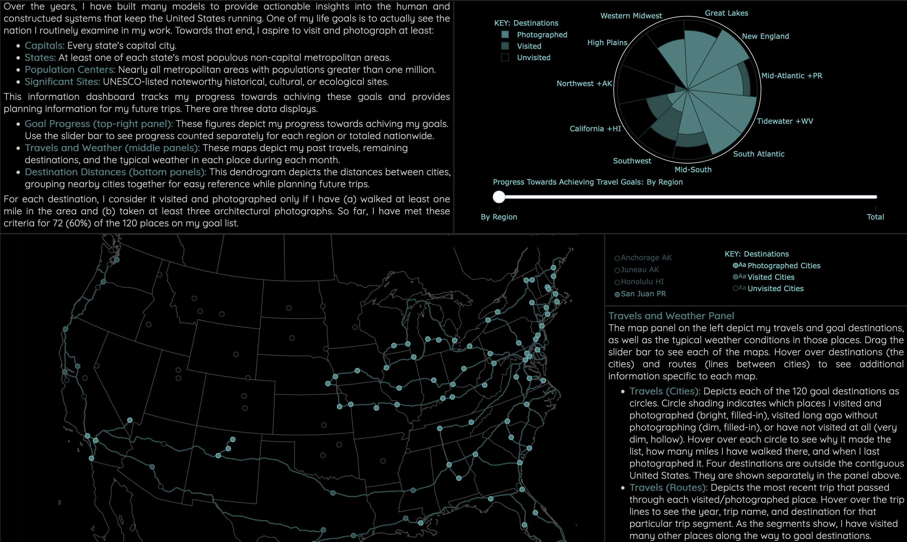
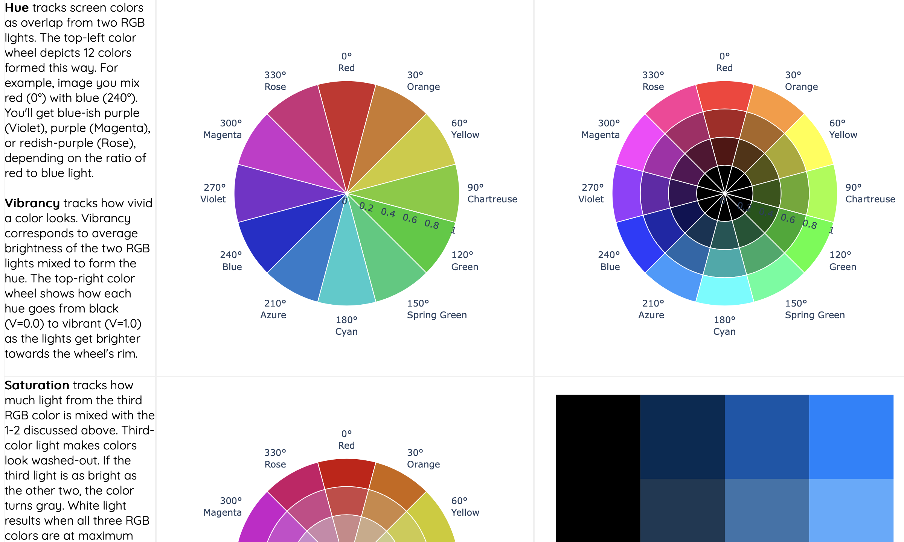
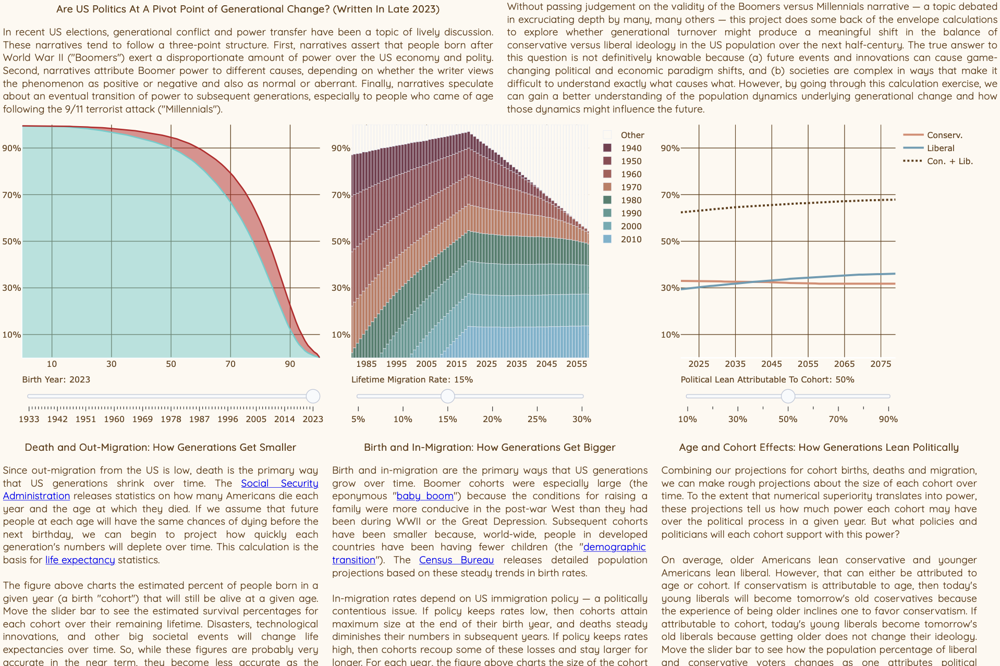
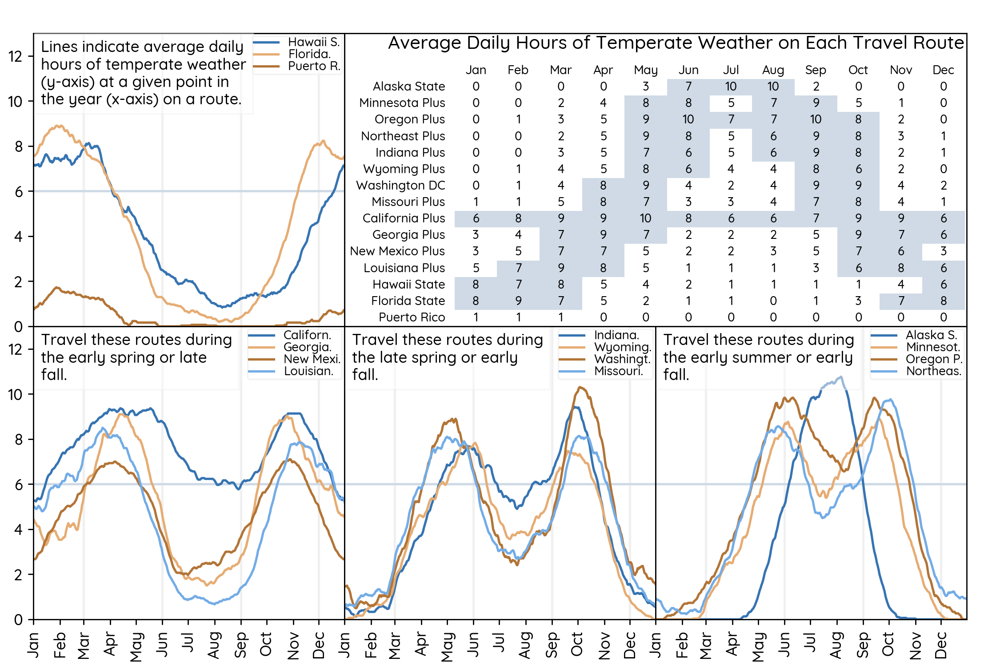

Josh Mendelsohn's Hobby Coding Projects
Work Projects
This portfolio showcases some of my programming projects outside the
workplace.
Professionally, I use these projects to keep my skills sharp and provide
a code portfolio that prospective business associates can view.
Personally, I think programming is as close to magic as one can get
in the real world — datamancy? After writing code for many years, it has
become a favorite tool in my life toolkit. I conducted some of these
projects for the fun of solving data / algorithmic puzzles and some to support
the various life activities that bring me happiness.
To view a project's visualization at full-size, click it. To see the
programming code executing each project, click the corresponding GitHub link.
I recommend starting with "My Travels in the United States v3.0", as it gets
the lion's share of my attention. The others tend to be short sprints to
master a technique or explore an interesting idea.
Since this gallery showcases personal projects, you may find the offerings
idiosyncratic. See the
Work Projects page for project
descriptions for some of my professional work. Note: the code underlying those
work projects is not publicly available.

My Travels in the United States v3.0 (2024-2023)
Years ago, I built my first model of American population dynamics. I resolved to see the
population centers I knew so well through data and began creating lists of destinations to
visit. This information dashboard tracks my past progress towards achieving my travel goals
and provides planning information for my future efforts. This iteration is the third
round of refactoring from the ground-up. It adds interactivity and UX improvements
based on how I tend to use the project to support travel planning.
See this project's Python code:
roadtrips

Color Math: Understanding HSV Coordinates (2024)
Screen colors are mixtures of Red, Green, and Blue (RGB) light. However, RGB mixtures do not
map well to the intuitive way people perceive colors. The HSV system translates RGB mixtures
to match perception. These reference charts illustrate the HSV Color system components: Hue,
Saturation, and Vibrancy. The charts server two purposes. First, they are a quick reference
for me when discusses visualization color palettes. Second, they are a basic educational
tool for interest colleagues who aren't familiar with the mechanics of on-screen color.
See this project's Python code:
color_math

Generational Shifts in US Politics (2023)
In recent US election cycles, some pundits have used generational conflict to explain electoral
outcomes while others express skepticism. This project does the math, exploring whether
generational shifts in power and values would actually produce a meaningful change in
conservative versus liberal political power. This question is not easily
forecast because societies are complex and the future is uncertain. However, by going through
the exercise, we can gain a better understanding of the population dynamics underlying
generational change.
See this project's Python code:
generational_change

My Travels in the United States v2.0 (2022)
Years ago, I built my first model of American population dynamics. I
resolved to see the population centers I knew so well through data and began creating
lists of destinations to visit. This information dashboard tracks my past
progress towards achieving that travel goal and provides planning information
for my future efforts.
See this project's Python code:
us_travels

Finding the Best Travel Weather (2022)
To meet my travel goal of visiting 128 metro areas, I have divided
the United States and Canada into a series of travel routes (see
Planned Routes). Good weather is crucial to a
good trip since my version of "visiting" involves miles of city
exploration walks. This project downloads NOAA weather data and calculates the
average number of temperate hours each day in each city. It uses these
calculations to predict the pleasantness of taking each trip at any given point
in the year.
See this project's Python code:
travel_weather

Matching State Borders to Where People Live ('22)
American state borders can be idiosyncratic. What if the borders were redrawn
to match where people live now? This project uses agglomerative cluster
unsupervised machine learning to place state borders in the rural spaces between
populated areas so that states are more compact and their borders do not cut
through cities. The project also synthesizes multiple data sources to understand
how the new states would vary in population, development, and politics.
See this project's Python code:
pop_cluster_map
Equalizing State Population and Land Area (2021)
America's states are not equally sized. For example, Texas has 51 times
Wyoming's population and 253 times Rhode Island's land area. This project
creates an interactive tool for exploring how targeted changes could produce
better state borders. As you change the boundaries, the tool will
automatically score how your changes affect inequality among states. Note: Tool
loads quickly slowly at this point, as it is based on obsolete code and interactivity
solutions.
See this project's R code:
better_state_borders

A Data-Driven World Travel List (2021)
Who doesn't want to see the world? However, the world is too big for anybody to
visit all of it. This project suggests a country in each of twenty-two
regions around the world and then selects up to three cities to visit for each
country. Behind the scenes, the project synthesizes multiple datasets with
information on points of interest and ease of travel. The resulting list of
travel destinations won't show an aspiring traveler the whole world but will
provide a diverse and exciting sample of what is out there.
See this project's R code:
travel_suggestions